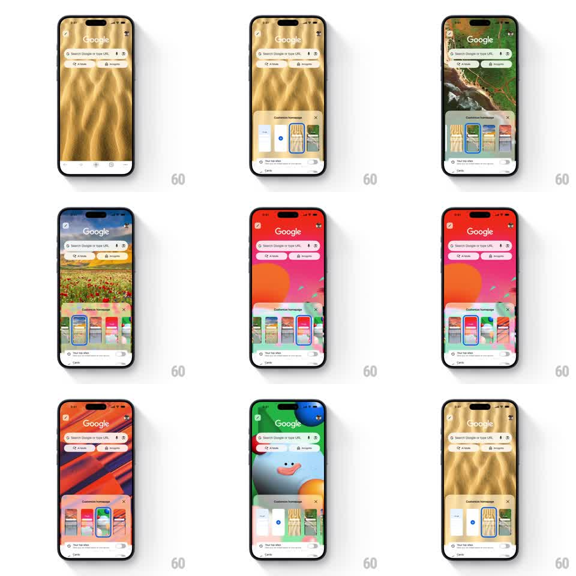

Media
Frame-by-frame

Rebuild this interaction 1:1: Chrome mobile's "Customize homepage" - a bottom sheet with a horizontal rail of background themes (photos, gradients, illustrations); tapping a theme instantly applies it to the Google homepage behind the sheet with a smooth crossfade, and the rail's selection ring slides to the tapped thumbnail.

Rebuild this interaction 1:1: Chrome mobile's "Customize homepage" - a bottom sheet with a horizontal rail of background themes (photos, gradients, illustrations); tapping a theme instantly applies it to the Google homepage behind the sheet with a smooth crossfade, and the rail's selection ring slides to the tapped thumbnail. ## Integration Integration: stack-agnostic spec - springs given as stiffness/damping, timed motions as duration + curve; map every value to your framework and animation library of choice. ## Scene Google homepage (search bar, AI Mode / Incognito chips) over a full-bleed background image. Bottom sheet: "Customize homepage" title, close X, a scrolling rail of ~6 theme thumbnails (portrait previews), "Your top sites" toggle + Cards toggle below. ## Motion spec Pattern: direct-manipulation theme picker. - Tap a thumbnail: homepage background crossfades to the new theme (350ms, ease-in-out) behind the sheet - live preview without closing the sheet. - Selection ring: a 2px accent border slides from the old thumbnail to the new one (spring ~350/25, 250ms) - the ring MOVES, it doesn't disappear and reappear. - The tapped thumbnail does a quick press scale (0.95, 100ms) on touch-down. - Sheet drag: dismisses with velocity-aware fling (spring back if under threshold, ~300/25). ## Calibration - Instant preview is the whole point - no apply button, no confirmation. - The moving ring sells continuity; a re-rendered ring feels like a page reload. ## Reduced motion Background swaps instantly; ring jumps without sliding. ## Don't miss - The sheet is partially translucent - you see the theme change behind it. - The search bar + chips adapt contrast to the new background (light/dark aware).